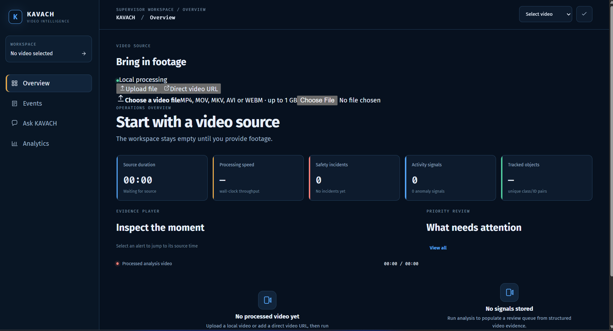

Live demo
01 / Computer vision
KAVACH
An explainable video-intelligence prototype that turns warehouse footage into tracked objects, evidence-backed safety events, and replayable incident records.
I built it around structured evidence first: YOLO perception, ByteTrack identities, temporal behaviour rules, SQLite incident history, and a grounded assistant that explains only what the evidence supports.
- YOLO + ByteTrack temporal tracking
- Explainable behaviour and risk scoring
- SQLite evidence replay + grounded assistant